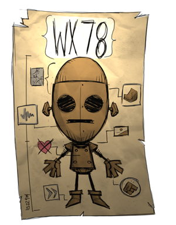

WX78
WX-78 may start out with low stats, but they are always in balance even after upgrading them and once upgraded WX-78 has the best stats in the game. Also It can eat anything spoiled or not without complications. Lastly If WX-78 is struck by lighting, It will get a massive boost in speed and it will produce its own light source plus he will regen full health when struck. (Just remember to stay out of the rain.)